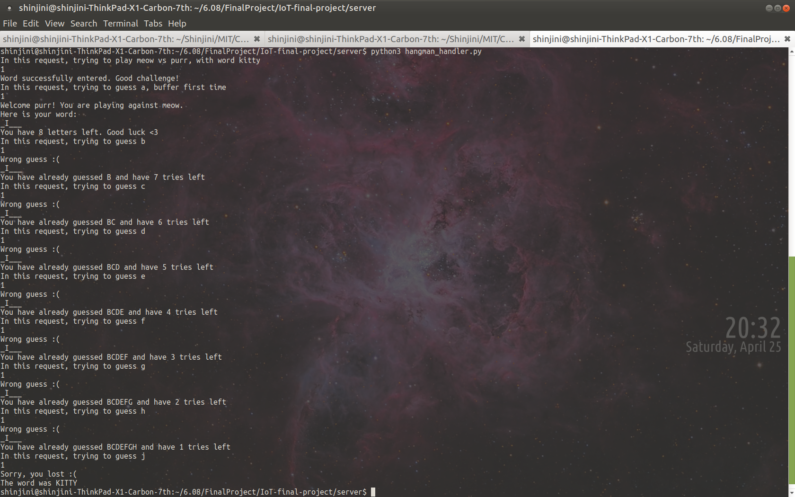

# Waiting Room Instead of users going directly to the games after selecting them, they will go to a 'waiting room', where they will wait until another user is in the waiting room of the same game. The interaction is as follows: 1. User A tries to play a game. It enters to the "waiting room" of it 2. User A will periodally look if there is anyone available for that game 3. If there is, then it will match A with the other player (let's say B) and change A's state to GAME. This will change the database 4. For B, it will be able to see that someone "claimed" them and then B will also change to GAME 5. A and B will be able to play We work with a database `rooms.db` that stores the following: | Username | Opponent | game_code | which_turn | |---------------------------|--------------------------------------------------------------------------|------------------|-------------| the user in consideration | the opponent of the user, if found, and an empty string otherwise | code of the game | Keeps track of what type of user `username` is. Possibilities are 1 or 2 when the user has found an opponent. Before that happens, this field holds a dummy value (`3.1415`)| To understand how this works, lets assume that DOGGO enters the waiting room for the game Hangman  After this, the ESP will continously ask the server if someone has joined the waiting room (this is equivalent to check if there is another user with empty `opponent` and same `game_code`). The ESP will show dots "." every time they ask the server, so that DOGGO knows we are trying our best to find him an opponent!  Now lets say that KIDDO also wants to play Hangman, and enters its waiting room.  Then KIDDO's and DOGGO's devices will be constantly asking the server if there is anyone available. Lets say that KIDDO's device manage do that first. Then KIDDO will update its own name and DOGGO's to reflect that KIDDO and DOGGO are opponents now. She will also be responsible to choose (randomly) which type of user she will be (1 or 2)  Now, when DOGGO is asking the server, he will see that he has been "claimed" (equivalent to check that his opponent is not an empty string anymore!). This way he will know who is his opponent and which player (1 or 2) they are! Once he realizes that, he will delete both the entries from `rooms.db`, so that no one else can mistakenly think that they are available.  After this, we note that KIDDO and DOGGO know who their opponent are and which player they are! ### Server side: `room_handler.py` There are two main functions that make this interaction possible - `enter_waiting_room(username, game_code)` : updates the database with given username and particular game - `check_if_available(username, game_code)` : checks if there is another player in such game that is also available ### ESP side When we enter the game we call the function ` void enter_waiting_room(char* username, int game_code)` to make the necessary request in the server. After that, the ESP calls `check_if_available(char* username, int game_code)` every 2 seconds until there is a valid response. At all times in the waiting room, we call `draw_waiting_room(uint8_t which_game, uint8_t num_dots)` where `num_dots` represents how many times we've been calling `check_if_available`. This is used to show dynamic messages like "Searching.." !!! Note We implemented it this way because we wanted the users to know that their devices are trying to find an opponent, rather than just seeng a non-changing screen while waiting # Keeping Track of Accounts ## ESP Side * The tilting mechanism is used to type username and password * Using accelerometer attached to the esp32, a `type()` function is implemented, along the same lines as that implemented in the exercise. * The player tilts the esp32 to go from one letter to another. Pressing button A selects the letter and pressing button B submits the username/ password. * POST request is used to send the login credentials to the server which verifies the information and returns whether the account creation or login is successful. ## Over the network * The password sent over server is encrypted using **Advanced Encryption Standard (AES)**, a type of symmetric cipher. * AES encryption works on two keys: one hard coded and other generated randomly each time AES encryption is used. * The client and the server agrees on the hard coded key before exchange and thus this is already hard coded in the esp32 and the server code. The randomly generated key, called iv code and generally 16 bytes long, is generated each time the AES encryption is used. * On esp32 side, **AES library** is used to encrypt the password. First the 16 byte iv is randomly generated. Then using the hard coded key and the iv code generated, the password is encrypted. * The iv code generated is then appended at the front of the encrypted password (so that server could extract it) and sent over the network * On the server side, **PyCrypto library** is used for decryption. * Using the first 16 bytes of the password received, the server extracts the iv code. Then, using the extracted iv code and the hard coded key, the password is finally decrypted. ## Serverside: `login_handler.py` The serverside script `login_handler.py` uses a database `usernames_db` for storing user information. The ESP makes POST requests to this script to create a new account, and GET requests to allow an existing user to log in. ### Creating a new account Making a new account in the arcade game is done via POST requests from the ESP. We first extract the username and password chosen from the POST request. A `POST()` function in the serverside script creates the account and saves it in a database named `usernames_db`. It enters the username, an encrypted password and the timestamp of account creation. The passwords are encrypted using a Vigenere cipher (with a *secret key*) before they are entered into the `usernames_db` database, such that the passwords are not stored in plaintext and one of the developers don't accidentally open the database and get an eyeful of everyone's passwords. Moreover, storing plaintext passwords makes security breaches easier. Hence, we store an encrypted form of an user's password in the database. Various sanity checks are conducted, including if the username is already taken. Lastly, feedback is given to the user about whether their account was successfully created. A preprended 0 or 1 is used by the ESP to check if there was any error or not, before prettifying and outputting the rest of the message onto the screen. ### Logging into an existing account Logging into an existing account in the arcade game is done via GET requests from the ESP. We first extract the username and password entered from the GET request. The `GET()` function then checks if the password is correct (it checks if the encrypted form of the entered password is the same as the password found for that username in the database), and gives the appropriate feedback. A preprended 0 or 1 is used by the ESP to check if there is any error or not, before prettifying and outputting the rest of the message onto the screen. Before and after views of the database (first entry was before encryption was implemented, second is after):
# Pong ## ESP Side The ESP side of the pong game is handled in three main files: Ball, Paddle, and Games_handler. ### Ball I have two main Ball constructors that I use for pong: the first is used by player 1, and it takes in the starting position as two floats, and it also takes the size of the paddles as well as the starting y velocity of the other ball in the game. The first 4 values are pretty self-explanatory in the code and the y-velocity is to make sure that the two balls don't have the exact same starting velocity because if they did it would look like there's only one ball in the game. The main role of the first constructor is just to give the ball a random initial velocity so that it can start moving towards either player, but both the y and x velocities have to be non-zero and the total velocity has have a value of 5. The second constructor, which is used by player 2, takes in the same first 4 values, and then it takes in a given x and y velocity, which was sent to the server by player 1, and I'll explain how that works in the server section. For pong, Ball only has one public method which is `move_ball()` and it gets called every DT milliseconds by `pong_game()`. It moves the ball similarly to the code that we had in a previous exercise, but it also takes in 2 values for the y value of the tops of both players' paddles so that it can differentiate between a collision with a player's paddle vs the wall. Finally, the Ball class is responsible for handling the end of a game, which it does with two bools collide_left and collide_right. These values are only set to true when the ball collides with either the left or right wall in the game. ### Paddle The Paddle class has a simple constructor which just takes in its starting y position. It has 2 public methods: `move_tilt()`, which is what the player's paddle uses to move, and `move_ai()` which handles the movement of the temporary "computer oponent". `move_tilt()` just takes in the velocity that the player wants to move with (which is handled by the general game code), and updates its y position accordingly. `move_ai()` takes in the position of both balls and both of their x velocities. The startegy is described in the comments in the code, but the basic idea is that it moves towards whichever ball is closer to hitting the paddle. ### Games_handler There are 2 versions of the pong game - we have the 2-player pong, and the 1-player pong where a user decided that they were in the waiting room for too long and wanted to play against the computer instead. In the 2-player pong, the waiting room assigned the players as player 1 and player 2, and then at the start of the game, player 1 uses the first ball constructor to choose the random velocities of the balls. They then send those velocities to the server in a POST request. Player 2, on the other hand, keeps making post requests to the server to see if player 1 has told the server what velocities they decided on, and if they have, then it'll get those velocities and set them to the balls' velocities using the second Ball consructor. You might notice something a little weird in the diagram below, and that's data sent by player 1 doesn't look the same as the data that player 2 receives! Why's that? Well, since http requests can only handle strings, I realized that I would have to do some work to turn them from 4 of floats into one string, and then back into the same 4 floats. The way I approached this was to send the floats as they were to the server, and then when I try to get those floats back, the server actually cuts all the floats to only have 2 decimals, and then adds 5 to each one, and squishes them all together into one string. Why add 5? Because it makes them all positive floats that are less than 10, so they're all exactly 4 characters long! This hack makes it easy for the ESP to break the sting down into 4 data points, then convert them to floats, and subtract 5 to get back to the original values. So now that both players agree on which way the balls are moving, we can start the game! Since the balls start with the same velocities and bounce around in the same way, the only thing that the players need to keep updating during the game is the positions of their paddles. So, I make an http request every 0.1 seconds that tells the server the current position of my paddle, and asks the server for the most recent position of my opponent's paddle. I then draw over the paddles with a black rectangle, and redraw them with their new positions. I keep doing this until either of the balls hit the left or right wall, in which case the game is over and I return true (meaning that I won) if the ball hit my opponnet's wall, or I return false if the ball hit my wall.
## Server Side On the server side, we have one file that handles everything for pong. It contains one database, appropriately named `pong_db` and it contains three tables: `pong_table`, `ball_table`, and `ready_table`. `pong_table` keeps track of each player's most recent position, `ball_table` keeps track of the initial ball velocities that any user sent to the database at the start of the game, and `ready_table` keeps track of all the players that are currently in the intermediate room betweent the waiting room and the pong game itself. Most of the server-side code is pretty straightforward, but want to highlight the intermediate room. There was originally an issue with the 2-player pong, where the games seemed to be out of sync for the two players because the game was actually starting at slightly different times for them, so the ball wasn't in the same place. This was because the player that clicked the ready button second would start the game immediately, while the player that clicked the button first would have to make a get request, which would return that their opponent was ready, and then they would start the game, usually 1-2 seconds later. To fix this, I added a little timing hack after both players were ready, where I get the current time right after the ESP finds that both players are ready, and then I do some math that pauses the code until the time is at the next multiple of 10 seconds. So for example if player 1's while loop exits at 10:29:43 and player 2's while loop exits at 10:29:45, they'll both start the game at exactly 10:29:50, and that way the game is actually in sync.
# Pictionary * A two player pictionary game is implemented where users can challenge each other and earn points * The first player is called the drawing player and draws on the screen, while the other player tries to guess the figure as the diagram evolves on his esp32. * The features added and their brief implementation are explained as follows: ## ESP Side ### Draw * The drawing player draws using the accelerometer attached to the esp32. * The ball class (implemented in exercise) coupled with accelerometer allows the user to draw on the screen * The user tilts the screen in the desired direction to direct the drawing tip and can create fascinating figures. ### Erase Last Ten Pixels * In case the drawing player makes a mistake, he can erase last 10 pixels drawn by pressing button B for a short span of time. * This feature gives the player liberty to rectify his mistake and avoid drawing the whole figure back from the beginning. * One think to note here is that it erases the last 10 pixels drawn as measured along the curve and not based on the absolute displacement of the points. ### Reset * By pressing button B for long, the screen resets and all the drawing drawn erases. * The ball resets and start again from the middle of the screen. * This feature allows the user to erase everything drawn on the screen and start drawing from fresh. Also this feature comes in handy when the guessing player successfully guesses and now the drawing player needs to start drawing another figure. ### Pause and Resume * The drawing player has a power to pause the drawing according to his needs. By having a short press of button C, the drawing pauses and by pressing it again, the drawing resumes. * The pause and resume feature take off the pressure from the drawing player to draw continuously. Using this feature, he could pause the drawing, think for a while and then resume it to finally draw the intended figure. ### Pen Up and Down * There are two states of pen available: penUp and penDown * The player can toggle between the two states by long pressing button C * In pen down state, the user draws normally and anything drawn will remain on the screen until explicitly erased. * On the contrary, in the pen up state, the user draws normally but when he transitions from the up to down state, everything drawn in the pen up state erases. * The pen up state allows the drawing player to draw disconnected images and increases the scope of the game, thus making it more fun. ### Increment Score * By short pressing button A, the score for the guessing player increases by one. * This feature becomes useful when the guessing player has successfully guessed the picture and now the drawing player needs to award him. * Within single combat, the drawing player can provide multiple points to the other player depending on the number of images correctly identified before the game ends. * Finally, when the game ends, the points earned by the guessing player are automatically added to the overall points of the player in the game of pictionary ### End Game * The drawing player can end the game by long pressing button A. * As specified above, ending the game automatically adds points earned by the guessing player too its total tally in the pictionary. ### State Machine * The state machine for the drawing player is as follows: (**Note**: **Button B** means long press of button B and **button b** means short press of button B) ************************************************************************************************** * * Button B * +-----------+ * Button c | Resets | * Resumes | screen v * the game +-+-----------+-+ * +------------------------------->+ +----+ Button b * | | PLAY | | erases last * | | | | 10 pixels * | +--------------------------+ +<---+ * | | Button c +----+-----+----+ * | | Pauses ^ | * | | the game | | Button C * | | | | Lifts * | | | | the pen * | v | | *+----+-----+----+ | | +---------------+ *| +---+ Button b | | | | *| PLAY_PAUSE | |Erases last | | | LIFT_PAUSE | *| | | 10 pixels | | | | *| +<--+ | | | | *+-+-----------+-+ Button C | | +----+-----+----+ * | ^ Puts down | | | ^ * | Button B | the pen | | Button c | | * +-----------+ | v Resumes the | | * Resets +----+-----+----+ pen Up state | | * screen | +<--------------------------+ | * | LIFT | | * | | | * | +---------------------------------+ * +---------------+ Button c * Pauses the * pen Up state * ************************************************************************************************** ## Server Side ### Communication * The communication between the two players is made using POST and GET request to the server file named pictionary_handler.py * The drawing player makes a POST request to notify the different actions it takes during the drawing. The POST body has three fields: * user : The user name of the player making the POST request * drawing : The different messages to be communicated to the other player (see the table below to see examples) * lift : It is either true or false or empty. True means the pen was lift when the POST request was made, false means it was down. * Sample example of each of the possible POST requests are as follows:
* On the server side, the POST request is parsed and the information is stored in the database named `pictionary_db` * The guessing player talks to the server through GET request. It sends the user name of its opponent and then the server returns the least recent POST request associated with that user name * One thing to note here is that frequency of GET request by guessing player is always greater than the frequency of POST request by drawing player. This is necessary as whenever there is a deletion on the screen, the drawing player sends two POST request continuously. This is necessary to assure smooth transition on the guessing side. So now for guessing player (who makes periodic GET request) to cope up with the POST request, he must have a frequency greater than the other player and thus the given requirement. # Hangman The arcade game platform includes a two-player Hangman game. One player is randomly assigned as being the challenger (indicated by `which_player` being 1) and the other the guesser (indicated by `which_player` being 2). The challenger types in a word that they want their opponent to guess and the guesser has 8 tries to guess the word, aided by the starting knowledge of the positions of all the I's and E's in the word, and guided feedback each time they guess a letter. They also run the pressure of getting the man hanged if they fail to guess the word within 8 tries! The gameplay controls are same for both the players: * Tilt to type (both the entire word challenged and the letter to be guessed) * Press button A to freeze letter * Press button B to submit the word/letter * Press button C to end game ## ESP Side On the ESP side, we have a boolean function `play_hangman()` which takes in the username of the player and opponent, the `which_player` flag, and the states of the three buttons. Both long and short pressing button C would return `false`, effectively ending the game and following the main FSM thereafter. For the challenger, we use the following FSM with 3 states -- START, CHALLENGE, and OBSERVE, represented by S, C and O in the diagram below. The game begins in START mode, after which they draw the word in CHALLENGE mode, and once they post the word, they are redirected to the OBSERVE mode.
The `hangman_guesses` database stores the usernames of the user and opponent, word being guessed, the current state of reveal of the word (we reveal all the I's and E's initially and let the guesser slowly guess the rest), the letters already guessed, the tries left before the man at the gallows meets his fate (it starts at 8), and the timestamp of the guess. Notably, the username of player and opponent are reversed for the two databases (as they are from the perspectives of the two different players). During a game, the `hangman_guesses` database looks as follows for a game about to be lost:
During a game, the `hangman_guesses` database looks as follows for a game on its way to victory:
### Database Functionality The following are the cases handled by the databases to ensure smooth gameplay: A. New Game being started: steps below are followed * Connect to the database * Search for the word given by the opponent: if not found, abort! * Form the hidden state of the word by replacing all letters by I's and E's with underscores * Insert the required fields into the database. * Return the relevant information to the guesser. * Game is on! B. Game in progress: can be one of the four cases below 1. Tried to enter multiple letters: return error message 2. Correctly guessed a new letter: can win if all letters have been guessed, or continue 3. Guessed the same letter twice: no penalties, gentle reminder 4. Guessed the wrong letter: either game continues with one less life, or ends if run out of all tries (and the man is hanged 😢) ### Little Extra Tidbits !!! Note Almost all of the gameplay logic, except for the drawing of the man being hanged, is taking place on the server. If the ESP side were not to exist at all (gasp!), the game can still be played by means of GET and POST requests to the serverside script. Some snapshots of us trying that are below! A winning gameplay output:
A losing gameplay output:

# Leaderboard ### Server side : `scores_handler.py` We hold a simple database (`scores.db`) that stored `user`, `score` and `game_code`. There were two main functions that made our interaction possible. - `add_to_db(user, gained_points, game_code)`: This updates `scores.db` by having the username `user` and the respective `game_code`. If this is the first time the `user` has played this game, this function will create a entry for them with a score of 0. After that, we will just update the score by increasing it by exactly `gained_points` - `get_highest_scores(game_code, num_users = 3)`: This will return the top `num_users` users's scores for the given `game_code` - `get_personal_scores(user)`: This returns the scores of the given user on all games (`PONG`, `PICTIONARY` and `HANGMAN`) !!! Note The default value of `num_users` is 3 because we found that it was hard to render nicely with more users. ### ESP side We used the following functions: - `update_score(char* user, int gained_points, int game_code)`: This was called by each of the games when they were over. This made the POST request in the server that called `add_to_db` and updated the database. - `get_personal_scores()`: When the user is logged in, they have the possibility to see their own scores. They are able to do that by calling this function, which makes a GET request to the server that then calls `get_personal_scores` and helps the ESP display the scores in a nice way. - `get_highest_scores(int game_code)`: This makes a GET request to the server and returns the highest scores nicely formatted for the ESP32 to use. - `draw_leaderboard_table(uint8_t which_game, char* all_scores)`: This used the response from `get_highest_scores` to draw the leaderboard nicely in the ESP32. # Image & Sound ### Sound To make losing the game not so boring, we added the sounds from the popular [meme](https://www.youtube.com/watch?v=qgDCM91f7NY) The main function that gets called is defined in `sound_handler.cpp` and it uses the `XT_DAC_Audio` library from [this link](https://www.xtronical.com/the-dacaudio-library-download-and-installation/) For this to work we needed to get a `.h` file that represents the song that is being played. We did this by following the instructions in [this other link](https://www.youtube.com/watch?v=gxpHDUHcBMk) and store our array in a header file. This file looks like the following: ~~~~~~~~~~~~~~~~~~~~~~~~~~~~~~ const unsigned char FuneralWavV5[88998] = { 0x52, 0x49, 0x46, 0x46, 0x9E, 0x5B, 0x01, 0x00, 0x57, 0x41, 0x56, 0x45, 0x66, 0x6D, 0x74, 0x20, 0x10, 0x00, 0x00, 0x00, 0x01, 0x00, 0x02, 0x00, ... ... ... 0x00, 0x00, 0x00, 0x17, 0x00, 0x00, 0x00, 0x53, 0x6F, 0x66, 0x74, 0x77, 0x61, 0x72, 0x65, 0x00, 0x4C, 0x61, 0x76, 0x66, 0x35, 0x37, 0x2E, 0x38, 0x33, 0x2E, 0x31, 0x30, 0x30, 0x00 }; ~~~~~~~~~~~~~~~~~~~~~~~~~~~~~~ ### Image And, of course, the music wasn't enough, so we had to show the image as well.  To show an image we used the following function: ~~~~~~~~~~~~~~~~~~~~~~~~~~~~~~~~~~~~~~~~~~~~~ void show_funeral_image(){ tft.pushImage(16, 0, funeral_image_width, funeral_image_height, funeral_image); //centered image } ~~~~~~~~~~~~~~~~~~~~~~~~~~~~~~~~~~~~~~~~~~~~~ !!! Note The numbers 16 and 0 were chosen as offsets so that the image was centered horizontally and on top. Similarly with the audio, the hardest part was to get a header file that could be processed by the ESP. This had to be data array with the pixels of the given image in RGB565 format. After searching through the internet for a long time, I found the [beautiful website](http://www.rinkydinkelectronics.com/t_imageconverter565.php) that accomplished what I needed. After that, it was just a matter of resizing the image so that it fit in the ESP's screen. The `funeral_image` is defined in `funeral_image.h` and it looks like the following: ~~~~~~~~~~~~~~~~~~~~~~~~~~~~~~~~~~~~~~~~~~~~~~~~~~~~~~~~~~~~~~~cpp #define funeral_image_width 128 #define funeral_image_height 72 const uint16_t PROGMEM funeral_image[9216] = { 0x0000, 0x31C5, 0xD6F8, 0xF7FB, 0xB5D4, 0x5B28, 0x73EB, 0x7C4B, 0x7C4B, 0x742B, 0x73EA, 0x6367, 0x6387, 0x9D2D, 0xBE52, 0x952D, // 0x0010 (16) pixels 0x6BE8, 0x952D, 0xADEF, 0xB631, 0xADCF, 0x848B, 0xB5F2, 0xCEB5, 0x950E, 0x950D, 0xADD0, 0x9D4E, 0xA56F, 0xD717, 0xFFFD, 0xFFFD, // 0x0020 (32) pixels ... 0x6B0C, 0x6B2C, 0x62EB, 0x62EB, 0x630C, 0x62EB, 0x6B2D, 0x8BCF, 0xCCB2, 0xECF3, 0xF4B3, 0xF4B3, 0xF4F4, 0xE4F4, 0xF659, 0xFF3C, // 0x23F0 (9200) pixels 0xE615, 0xE5B3, 0xE5D2, 0xC4F0, 0x7B2A, 0x7B0A, 0xBD11, 0xE656, 0xCD93, 0x9C0D, 0x72C9, 0xB4D0, 0xFEB6, 0xFED7, 0x72A8, 0x0800, // 0x2400 (9216) pixels }; ~~~~~~~~~~~~~~~~~~~~~~~~~~~~~~~~~~~~~~~~~~~~~~~~~~~~~~~~~~~~~~~ # TeamTop left: Pawan Goyal Top middle: Viktoriya Tabunshchyk Middle: Shinjini Ghosh Middle right: Raul Alfredo Alcantra Castillo A huge thank you to our TAs Tosin and Evan, and to Joe, for all your guidance and support!